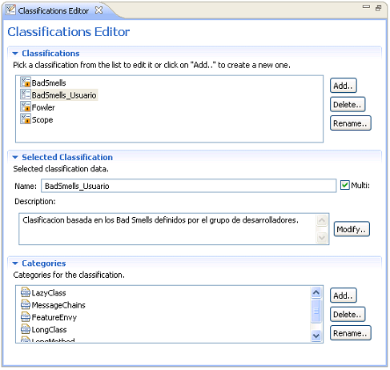

Editor de clasificacionesEditor de clasificaciones
Editor de clasificacionesEditor de clasificaciones
The Classifications Editor is an editor designed to visualize and edit the list of available user-classifications. Only the user classifications can be modified for this purpose the editor provides means to create new user classifications, modify it's attributes or it's categories. The classifications are used to categorize the refactorings and are used in the catalog view:
This is the aspect the view shows:
